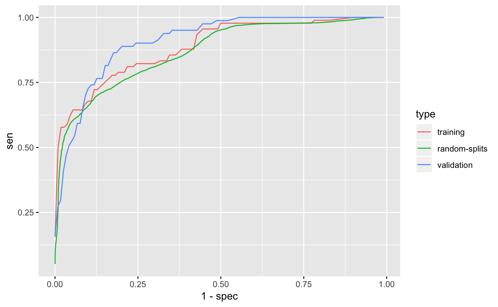

Generate ICD feature
w <- rgamma(9000, 0.3)
icd_feature <- data.frame(
PatientID = sample.int(10000, 9000),
ICD1 = rpois(9000, 7 * (rgamma(9000, 0.2) + w) / 0.5),
ICD2 = rpois(9000, 6 * (rgamma(9000, 0.8) + w) / 1.1),
ICD3 = rpois(9000, 1 * rgamma(9000, 0.5) / 0.5),
ICD4 = rpois(9000, 2 * rgamma(9000, 0.5) / 0.5))Generate NLP feature
w <- rgamma(9500, 0.4)
nlp_feature <- data.frame(
PatientID = sample.int(10000, 9500),
NLP1 = rpois(9500, 8 * (rgamma(9500, 0.2) + w) / 0.6),
NLP2 = rpois(9500, 2 * (rgamma(9500, 1.1) + w) / 1.5),
NLP3 = rpois(9500, 5 * (rgamma(9500, 0.1) + w) / 0.5),
NLP4 = rpois(9500, 11 * rgamma(9500, 1.9) / 1.9),
NLP5 = rpois(9500, 3 * rgamma(9500, 0.5) / 0.5),
NLP6 = rpois(9500, 2 * rgamma(9500, 0.5) / 0.5),
NLP7 = rpois(9500, 1 * rgamma(9500, 0.5) / 0.5))Generate HU feature
hu_feature <- data.frame(
PatientID = seq_len(10000),
NoteCount = rpois(10000, 30 * rgamma(10000, 0.1) / 0.1))df <- merge(
merge(icd_feature, nlp_feature, by = "PatientID", all = TRUE),
hu_feature, by = "PatientID", all = TRUE)
df[is.na(df)] <- 0
ii <- sample.int(5000, 400)
expr <- quote(plogis(
-5 + 1.5 * log1p(ICD1) + log1p(NLP1) +
0.8 * log1p(NLP4) - 0.5 * log1p(NoteCount)))
summary(with(df, eval(expr)))## Min. 1st Qu. Median Mean 3rd Qu. Max.
## 0.0003186 0.0973158 0.3578100 0.4289767 0.7676951 0.9995623training_label <- data.frame(
PatientID = head(ii, 200),
Label = rbinom(200, 1, with(df[head(ii, 200), ], eval(expr))))
validation_label <- data.frame(
PatientID = tail(ii, 200),
Label = rbinom(200, 1, with(df[tail(ii, 200), ], eval(expr))))Define features and labels used for phenotyping.
data <- PhecapData(
icd_feature = icd_feature,
nlp_feature = nlp_feature,
hu_feature = hu_feature,
training_label = training_label,
validation_label = validation_label,
patient_index = "PatientID")Specify the surrogate used for surrogate-assisted feature extraction (SAFE). The typical way is to specify a main ICD code, a main NLP CUI, as well as their combination. The default lower_cutoff is 1, and the default upper_cutoff is 10. In some cases one may want to define surrogate through lab test. Feel free to change the cutoffs based on domain knowledge.
surrogates <- list(
PhecapSurrogate(variable_names = "ICD1",
lower_cutoff = 1, upper_cutoff = 10),
PhecapSurrogate(variable_names = "NLP1",
lower_cutoff = 1, upper_cutoff = 10),
PhecapSurrogate(variable_names = c("ICD1", "NLP1"),
lower_cutoff = 1, upper_cutoff = 10))Run surrogate-assisted feature extraction (SAFE) and show result.
## ICD1 NLP1 ICD1&NLP1
## NumCases 2155 2754 4946
## NumControls 4479 3522 1440
## Using surrogate ICD1
## Subsample 1
## Subsample 11
## Subsample 21
## Subsample 31
## Subsample 41
## Subsample 51
## Subsample 61
## Subsample 71
## Subsample 81
## Subsample 91
## Subsample 101
## Subsample 111
## Subsample 121
## Subsample 131
## Subsample 141
## Subsample 151
## Subsample 161
## Subsample 171
## Subsample 181
## Subsample 191
## Subsample 200
## Using surrogate NLP1
## Subsample 1
## Subsample 11
## Subsample 21
## Subsample 31
## Subsample 41
## Subsample 51
## Subsample 61
## Subsample 71
## Subsample 81
## Subsample 91
## Subsample 101
## Subsample 111
## Subsample 121
## Subsample 131
## Subsample 141
## Subsample 151
## Subsample 161
## Subsample 171
## Subsample 181
## Subsample 191
## Subsample 200
## Using surrogate ICD1&NLP1
## Subsample 1
## Subsample 11
## Subsample 21
## Subsample 31
## Subsample 41
## Subsample 51
## Subsample 61
## Subsample 71
## Subsample 81
## Subsample 91
## Subsample 101
## Subsample 111
## Subsample 121
## Subsample 131
## Subsample 141
## Subsample 151
## Subsample 161
## Subsample 171
## Subsample 181
## Subsample 191
## Subsample 200## [1] "ICD1" "ICD2" "NLP1" "NLP2" "NLP3"
## attr(,"frequency")
## ICD1 ICD2 ICD3 ICD4 NLP1 NLP2
## 0.67500000 0.67500000 0.14500000 0.12000000 0.66833333 0.58500000
## NLP3 NLP4 NLP5 NLP6 NLP7 NoteCount
## 0.67000000 0.08666667 0.04333333 0.07333333 0.09166667 0.02500000
## attr(,"class")
## [1] "PhecapFeatureExtraction"Train phenotyping model and show the fitted model, with the AUC on the training set as well as random splits.
## Split 1
## Split 11
## Split 21
## Split 31
## Split 41
## Split 51
## Split 61
## Split 71
## Split 81
## Split 91
## Split 101
## Split 111
## Split 121
## Split 131
## Split 141
## Split 151
## Split 161
## Split 171
## Split 181
## Split 191
## Split 200Validate phenotyping model using validation label, and show the AUC and ROC.
validation <- phecap_validate_phenotyping_model(data, surrogates, model)
# print(validation)
phecap_plot_roc_curves(validation)
Apply the model to all the patients to obtain predicted phenotype.